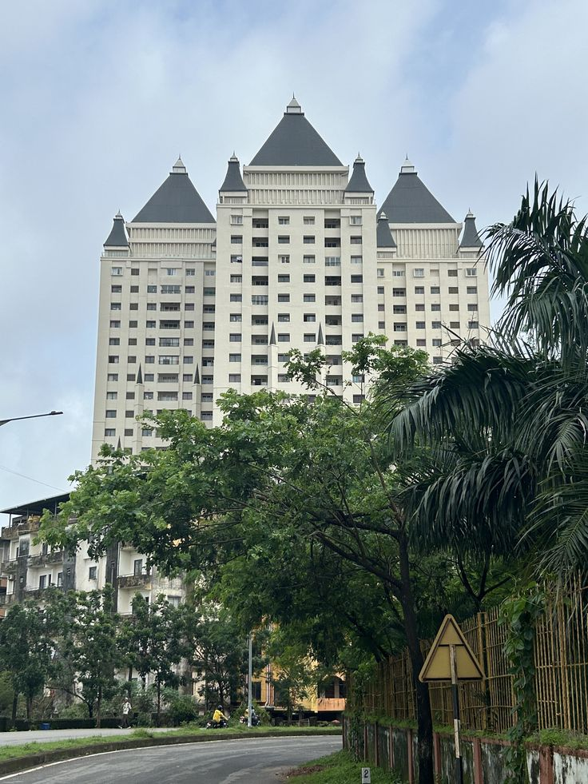
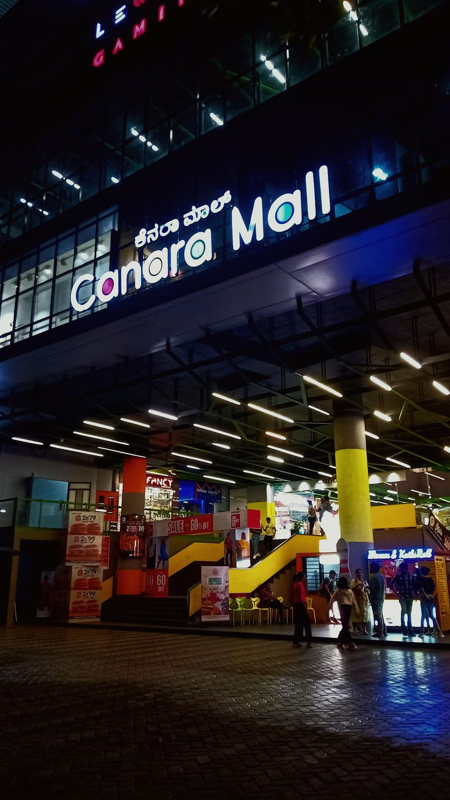

Manipal is a university town and suburb in the Udupi district of Karnataka, India, known for the Manipal Academy of Higher Education (MAHE) and its various constituent institutions. It is situated on a plateau, about five kilometers from the city of Udupi, and is a popular hub for students from around the world, offering a range of academic programs and a vibrant campus life.
 Royal Embassy is a 30-story residential building located in Manipal, Karnataka. Promoted by Malpe Manipal Builders, it is known as one of the tallest buildings in the city. This architectural project offers luxurious apartments with stunning views of the surrounding natural landscape. The residential complex is situated on Dr. V.S. Acharya Road in Vidyaratna Nagar, a prime location near the Manipal University campus. Residents have access to a variety of amenities, including a swimming pool, fully-equipped gym, and landscaped gardens. It is equipped with modern facilities, such as high-speed elevators, 24/7 power backup, and advanced security systems
 Canara Mall is a popular entertainment complex situated in Eshwar Nagar, Manipal. It features Bharath Cinemas, a four-screen multiplex offering the latest films with Dolby Atmos sound. The mall also boasts a large food court with a range of dining options, including McDonald's, Pizza Hut, and Burger King. Shoppers can browse through various outlets for fashion and accessories, such as Trends and Skechers. Amenities include a children's playground, arcade games, and ample parking facilities. Its location makes it a convenient leisure hub for both students and residents of Manipal. Despite some past critiques, it remains a go-to spot for food, movies, and shopping.